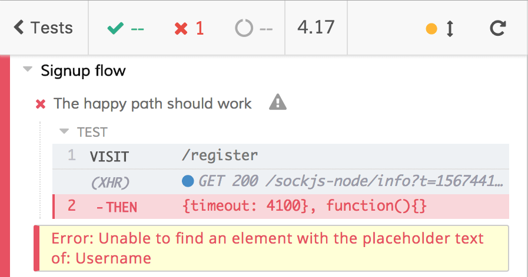
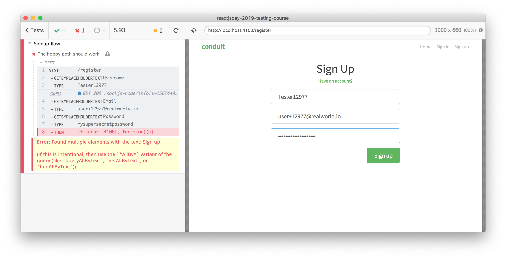

cypress-testing-library
Have you probably heard about the amazing Testing Library of Kent C. Dodds (and if you have not, do not worry, you are in the right place). Without anticipating too much, Testing Library is based on the assumption that the tests must consume the web app the same way the consumer does.
What does it mean? Well, try thinking about how your users consume a web app: they look for contents, labels, placeholders, buttons, etc. to interact with them. They do not care about selectors, they care about contents.
Take a look at the test we wrote
File: cypress/integration/examples/signup/signup-3-data-testid.e2e.spec.js
/// <reference types="Cypress" />
context("Signup flow", () => {
it("The happy path should work", () => {
cy.visit("/register");
const random = Math.floor(Math.random() * 100000);
cy.get("[data-testid=username]").type(`Tester${random}`);
cy.get("[data-testid=email]").type(`user+${random}@realworld.io`);
cy.get("[data-testid=password]").type("mysupersecretpassword");
cy.get("[data-testid=signup-button]").click();
cy.get("[data-testid=no-articles-here]", { timeout: 10000 }).should("be.visible");
});
});
After all, an input field with that responds to the [data-testid=username] selector do not give us the confidence that the user can consume it, nor that the right element has the data-testid attribute.
The Testing Library has a lot of plugins, one of them is dedicated to Cypress.
Adding a plugin to Cypress is straightforward, in case of cypress-testing-library, you must:
install it with
$ npm install --save-dev @testing-library/cypressadd
import '@testing-library/cypress/add-commands'to thecypress/support/commands.jsfile
Now we can leverage all the Testing Library functions, like findByText, findByPlaceholderText, etc. Thank it, we can make out test more robust, more readable, and more debuggable.
We need to change all the cy.get calls to the corresponding functions (added on the cy global object by Testing Library)
it("The happy path should work", () => {
cy.visit("/register");
const random = Math.floor(Math.random() * 100000);
cy.findByPlaceholderText("Username").type(`Tester${random}`);
cy.findByPlaceholderText("Email").type(`user+${random}@realworld.io`);
cy.findByPlaceholderText("Password").type("mysupersecretpassword");
cy.findByText("Sign up").click();
cy.findByText("No articles are here... yet.", { timeout: 10000 }).should("be.visible");
});
Take a look at the test code, every command now is 100% aligned to what the user does while he/she tries to signup!
Less debugging required
There is another, not to be ignored, advantage: what happens with the previous, data-testid-based, test when it fails?
We know what is the Test Runner feedback

but this kind of feedback/error is generated by three different causes:
the input field does not exist
the input field exists but it has not the
data-testidattribute,the input field exists but its
data-testidattribute is not set tousername
Both the latter cases have not a visual correspondence (if you look at the web app, the input field exists!) and require you, in order to fix the issue, to open Cypress, run the test, inspect the DOM element, and check for its data-testid attribute. That's not an hour-long process but, again, if only the test could give us more useful feedback...
cy.findByPlaceholderText does exactly what we're speaking about! If it fails

you just need to take a look at the Cypress screenshot (that it saves automatically) to check if
the input field does not exist
the input field has not the placeholder
the input field has not the right placeholder
and we avoid a debugging process!
Multiple elements
If we try to run the updated test
it("The happy path should work", () => {
cy.visit("/register");
const random = Math.floor(Math.random() * 100000);
cy.findByPlaceholderText("Username").type(`Tester${random}`);
cy.findByPlaceholderText("Email").type(`user+${random}@realworld.io`);
cy.findByPlaceholderText("Password").type("mysupersecretpassword");
cy.findByText("Sign up").click();
cy.findByText("No articles are here... yet.", { timeout: 10000 }).should("be.visible");
});
we get an error

more in detail, the error is the following
The error is pretty self-explanatory if you look at the UI, there are we different elements with the same text "Sign Up": the title and the button.
There are a lot of different solutions to leverage the findByText function distinguishing between the title and the button. The next solutions are just to get you to familiarize with the Cypress logics, the first three solutions are probably the best ones. We could:
- use the
withinAPI to restrict the searching power offindByText
cy.get("form")
.within(() => cy.findByText("Sign up"))
.click();
- leverage the
selectoroption offindByText
cy.findByText("Sign up", { selector: "button" }).click();
- leverage the
containeroption offindByText
cy.get("form")
.then(subject => cy.findByText("Sign up", { container: subject }))
.click();
- select the second element returned by the
getAllByTextAPI (insead of thefindByTextone)
cy.getAllByText("Sign up")
.then($el => $el[1])
.click();
- use
jQuery.grep(the jQuery version ofarray.find)
cy.getAllByText("Sign up")
.then($els => Cypress.$.grep($els, el => el.tagName.toLowerCase() === "button"))
.click();
Please note: Cypress automatically exposes jQuery through Cypress.$.
There is an important difference between how cy.contains and cy.findByText work:
cy.containsretrieves DOM elements even without an exact match (cy.contains("No articles are here")works)cy.findByTextdoes not retrieve DOM elements without an exact match (cy.findByText("No articles are here")does not work, you need to replace it withcy.findByText("No articles are here... yet.")... Unless you pass anexact: falseoption)
Using Testing Library, the test becomes the following
File: cypress/integration/examples/signup/signup-4-cypress-testing-library.e2e.spec.js
/// <reference types="Cypress" />
context("Signup flow", () => {
it("The happy path should work", () => {
cy.visit("/register");
const random = Math.floor(Math.random() * 100000);
cy.findByPlaceholderText("Username").type(`Tester${random}`);
cy.findByPlaceholderText("Email").type(`user+${random}@realworld.io`);
cy.findByPlaceholderText("Password").type("mysupersecretpassword");
cy.get("form")
.within(() => cy.findByText("Sign up"))
.click();
cy.findByText("No articles are here... yet.", { timeout: 10000 }).should("be.visible");
});
});